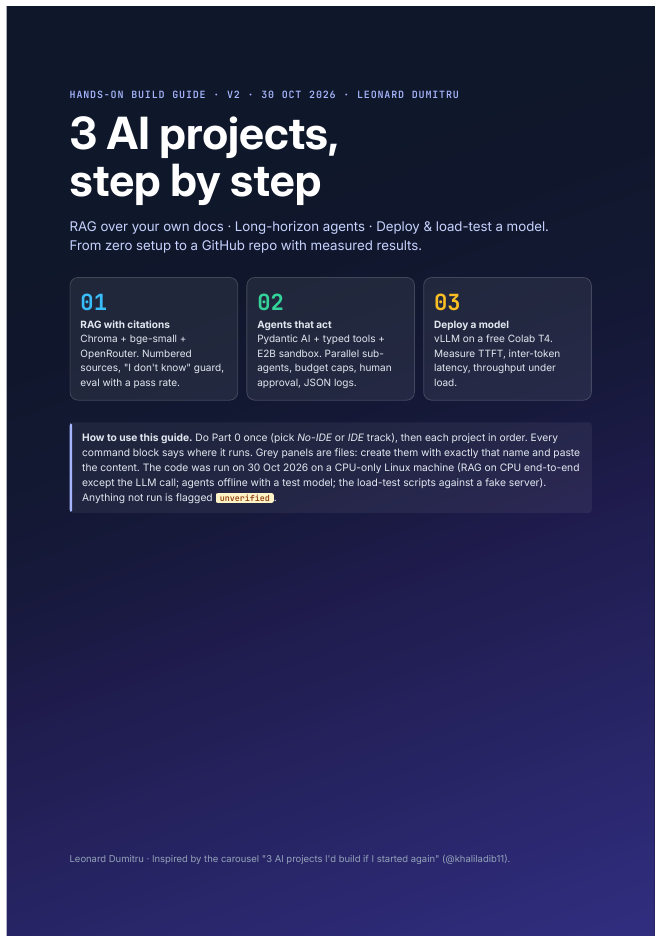

AI Projects: a step-by-step build guide
Three AI systems built from an empty folder to a measured result: retrieval with citations, an agent that works safely over many steps, and an open-weights model served on a free GPU. Every step has complete code, a check that tells you it worked, and the errors you are likely to hit.
By Leonard Dumitru · Python · code tested on CPU, GPU and API steps marked

Setup · pick a track
Each project opens with full setup in two versions, so it works whether or not you have a development environment.
Nothing to install. Paste the cells, add keys through Colab secrets, and use the free T4 GPU for the serving project.
Python install, virtual environment, requirements.txt, a .env file for keys, and running each script from the terminal.
The three projects
RAG over your own documents, with citations and an eval pass rate
Load PDFs or a public test set, split them into passages, embed them with sentence-transformers and store them in Chroma, with a FAISS version alongside. Questions are answered through any OpenAI-compatible model on OpenRouter, and every answer cites the passages it used.
- Ingest and chunk documents (
ingest.py) - Embed, index and retrieve top passages
- Answer with numbered citations (
rag.py) - Evaluate: retrieval hit-rate, regex checks, optional LLM judge (
eval.py)
- Retrieval-only mode returns the right passage without an API key
- Answers carry citations to real passages
eval.pyprints a pass rate you can track over time
Long-horizon agents that act safely and leave a trail
A Pydantic AI agent with typed tools that reads, searches and writes files and runs code only inside a sandbox: E2B in the cloud, or a locked-down Docker container with no network. Guardrails stop path escapes, every step is logged, and a task suite tests the agent like software.
- Define tools and the workspace boundary (
agent.py) - Run generated code in E2B or Docker (
sandbox.py) - Log every step to JSONL (
logger.py) - Run the task suite and read the pass/fail table (
run_tests.py)
- The agent finishes a multi-step task inside its workspace
- A
../path attempt is refused - Every run leaves a readable step log and a test score
Serve an open-weights model on a free GPU and measure it
Stand up vLLM on a Colab T4 with an OpenAI-compatible endpoint, then load-test it at 1, 4 and 16 concurrent users. The output is a results table that turns latency into a sizing and cost argument, with SGLang and Lightning AI covered as alternatives.
- Start vLLM with a small instruct model (
colab_cells.py) - Load-test streaming chat completions (
load_test.py) - Read server-side metrics (
metrics_summary.py) - Write up results and cost per million tokens (
README_template.md)
- The endpoint answers an OpenAI-style request
- TTFT, inter-token latency and throughput are measured per concurrency level
- You can say where throughput stops scaling, and why
Stack
Status · what has been tested
fake_server.py lets you try the load test without one.Files
| AI_Projects_Step_by_Step_Guide.pdf | The full 53-page guide, print-ready. |
| docs/guide.html | The same guide as a web page. |
| github.com/darkanalytica1/ai-projects-guide | All code for the three projects, with placeholder keys only. MIT licence. |